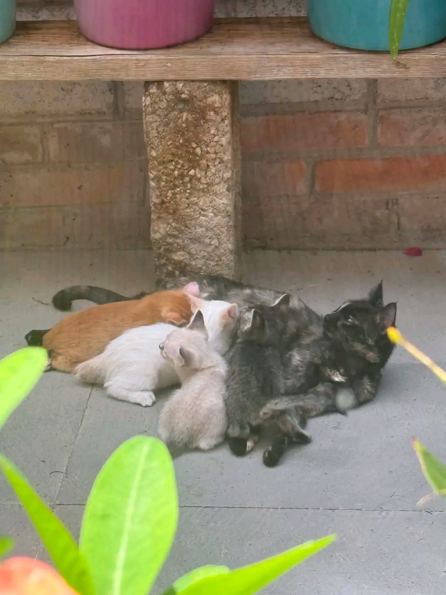
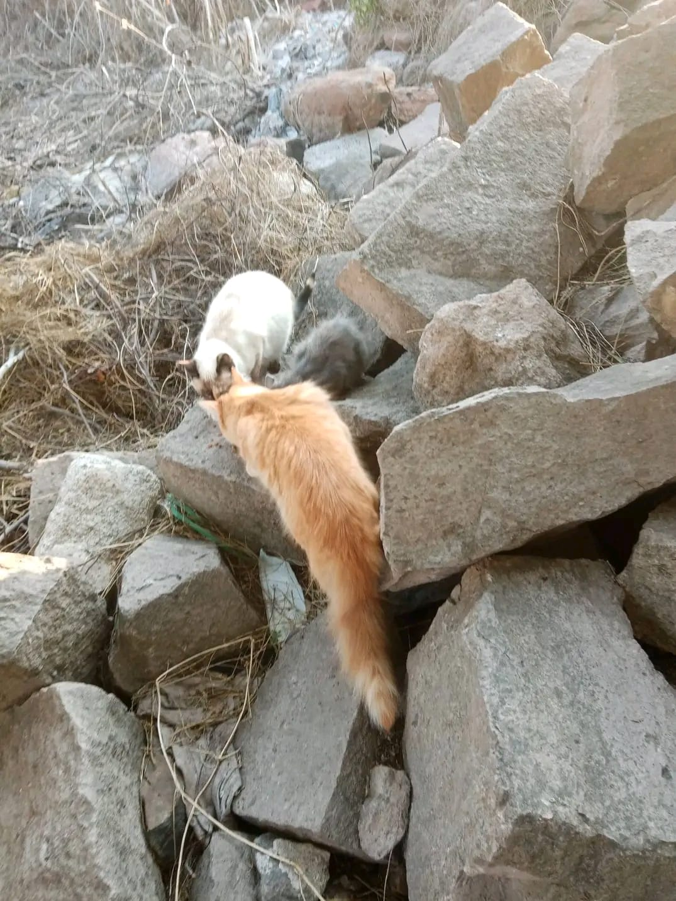

Impulsar la adopción de perros y gatos para que encuentren un hogar seguro, permanente y lleno de cuidados.
Promover el respeto, la protección y el trato digno hacia todos los animales.
Difundir información sobre tenencia responsable, esterilización y prevención del abandono mediante campañas informativas.
Trabajar en colaboración con voluntarios, refugios, médicos veterinarios y ciudadanos comprometidos con la causa.

Comprender y respetar las necesidades de cada animal.
Trabajar con responsabilidad para lograr un cambio real.
Promover acciones sostenibles y de beneficio comunitario.
Colaborar con personas y organizaciones para alcanzar objetivos comunes.
Compartir información confiable que fomente la tenencia responsable.
Involucrar a la comunidad en la protección y cuidado de los animales.

"Creemos que cada perro y cada gato merece vivir con dignidad, recibir amor y formar parte de una familia responsable. Una pequeña acción puede transformar completamente la vida de un animal."
Cada adopción, cada campaña y cada persona que decide involucrarse representa una oportunidad para construir una comunidad más consciente y comprometida con el bienestar animal.